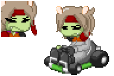
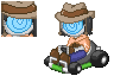
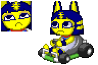
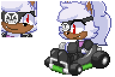
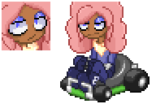
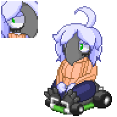
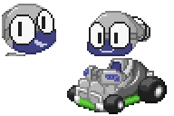

Deidamia Leonte (Tender Frame Cocoon) prepares for a peculiar mission: go-karting.
Being a trained sniper, her high speed stat allows her to overtake the competition in sharp bursts, but be careful; with a low weight stat, she can be easily pushed around by those who can keep up.
(Voice lines taken from Soulcalibur VI)

Download (Last updated 4/19/2023)
Her (nice) stats allow her to live fast and die hard, standing her ground at the cost of a slower-than-average start. Yee-haw, pard'ner!
(Voice lines made with TextMagic TTS (English (US) - Olive))

Download (Last updated 5/1/2023)
Her stats befit her snooty personality, preferring to lead the pack over dealing with those who clash against her, me-meow.
(Voice lines edited and spliced from Mario Kart 8 (Villager SFX and AC Course Sounds))

Download (Last updated 5/1/2023)
Despite her robotic nature, she's actually fairly light on her feet, speeding past the competition when the opportunity presents itself.
(Voice lines taken from Puyo Puyo Tetris)

Download (Last updated 5/5/2023)
While her monastic training makes her a speed demon on the tracks, her flimsy weight means you'll have to be precise when playing as her.
(Voice lines taken from Ultimate Marvel vs. Capcom 3)

Download (Last updated 5/13/2023)
Her low acceleration and modest weight make her a force to be reckoned with in the right hands.
(Voice lines taken from Ultimate Marvel vs. Capcom 3)

Download (Last updated 5/30/2023)
His stats are much befitting for a man of bombs, encouraging quick yet cautious play.
(Voice lines taken from Team Sonic Racing)
